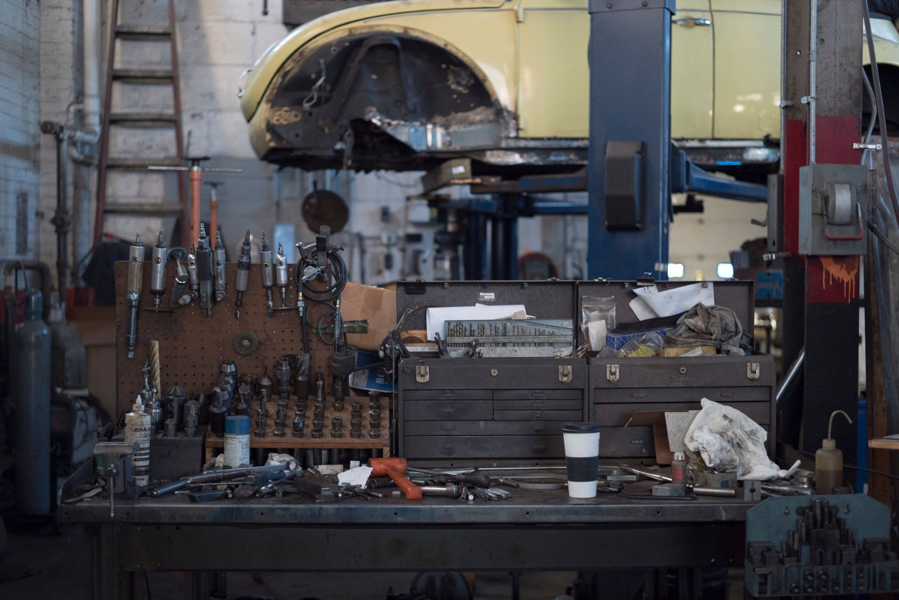
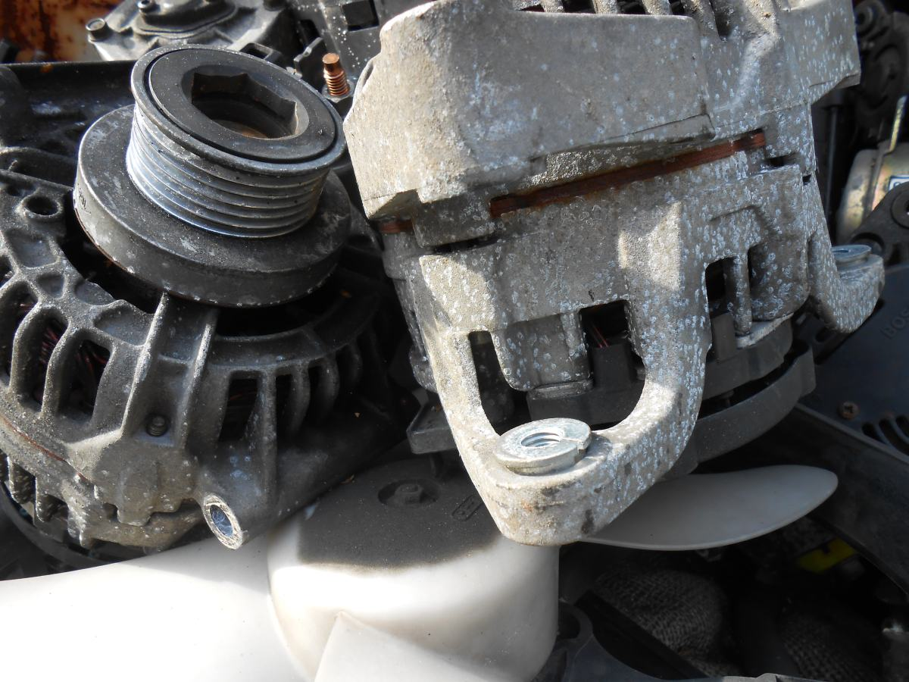
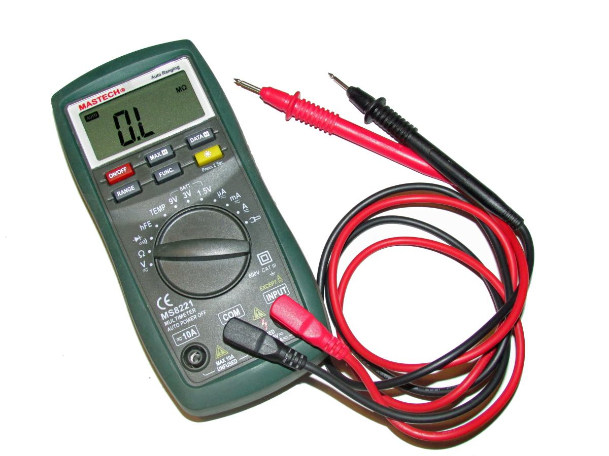
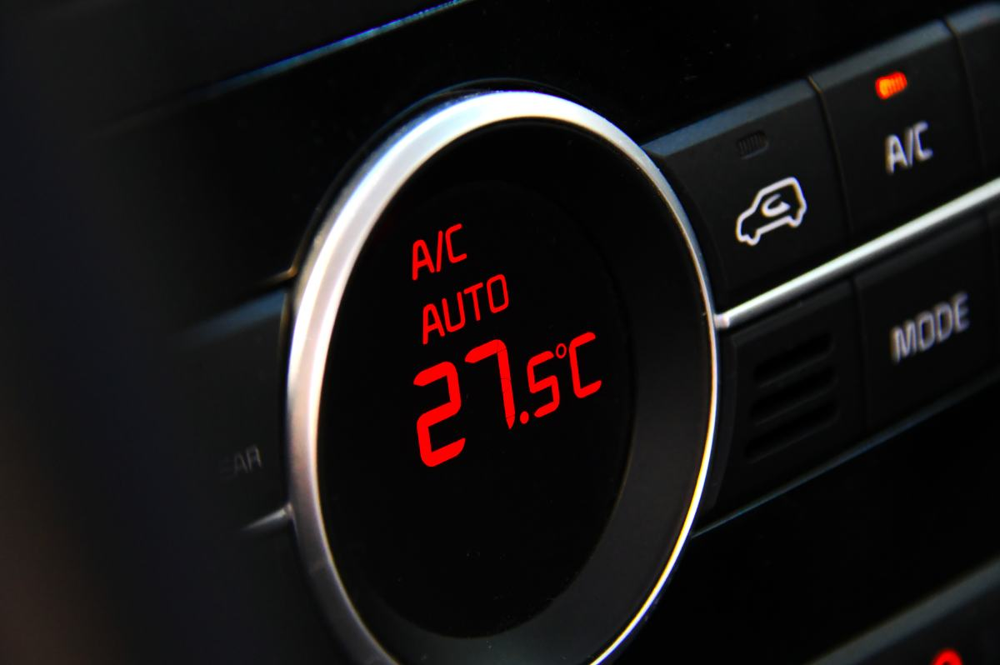
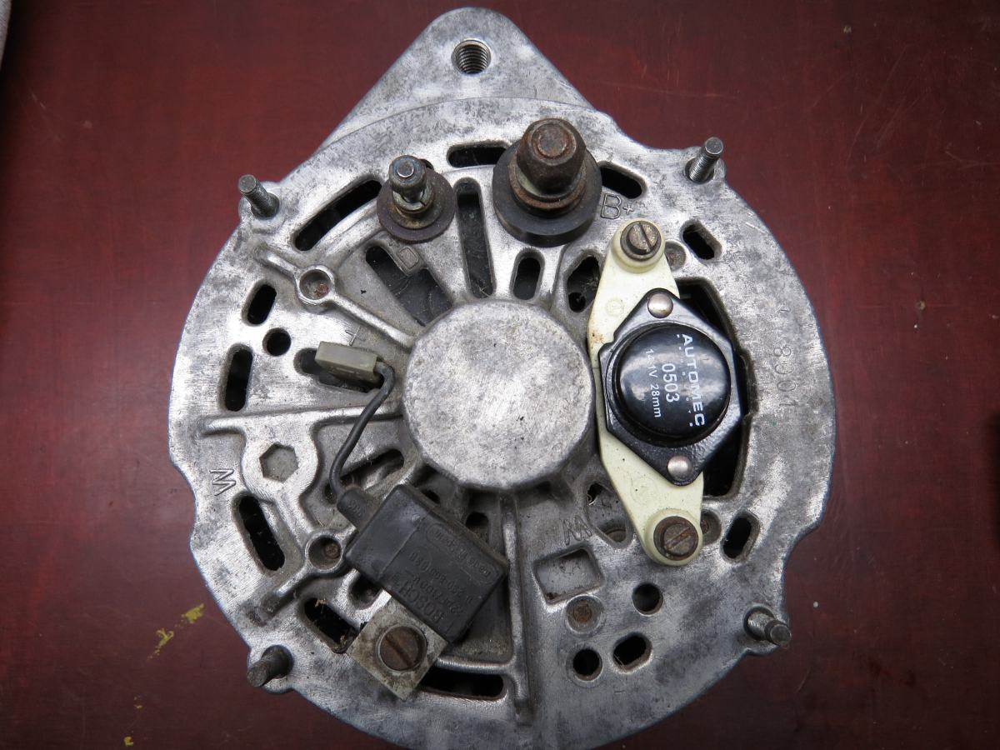
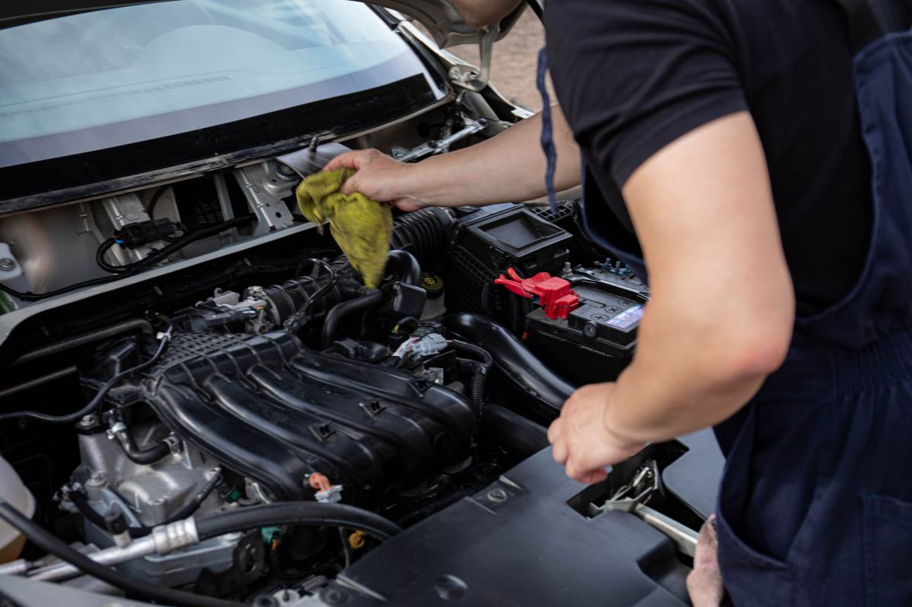

Los bornes
Si están cubiertos de un polvo blanco o verde, eso es sulfato y hace de aislante: la corriente no pasa aunque la batería tenga carga. Se ve a simple vista y explica muchísimas «baterías malas» que no lo eran.
Pitrufquén · Región de La Araucanía
Y ahí empieza el problema de siempre: casi todo el mundo cambia la batería. A veces era eso. Muchas veces era el alternador, y la batería nueva se descarga igual en dos días. Esta página parte por lo único que se puede saber sin abrir nada: el ruido que hace al girar la llave.
01 — La pieza de esta página
Batería, alternador o motor de arranque. Son tres piezas distintas, cuestan distinto y se cambian distinto, y desde afuera se parecen todas: el auto no parte. Pero cada una falla con su propio sonido, y eso se puede escuchar desde el asiento sin herramientas y sin abrir el capó.
«No hace ningún ruido, ni prende una luz»
Batería completamente descargada, o un borne suelto o sulfatado. Es el caso más común y también el más barato de los tres, si es sólo el contacto.
«Las luces prenden, pero al girar la llave se apaga todo»
La batería tiene carga para las luces y no para el arranque, que es lo que más consume. Batería en las últimas, o un borne que no está haciendo buen contacto.
«Hace clic-clic-clic rápido y no gira»
Falta corriente. El relé del arranque intenta pegar y suelta una y otra vez porque no le alcanza. Casi siempre es la batería o el cable, no el arranque.
«Un solo clic fuerte y después nada»
Llegó corriente y el motor de arranque no giró. Acá sí apunta al arranque — o a su relé—, y es el caso que más se confunde con batería.
«Gira lento, como cansado, y al final parte»
La batería está al final de su vida, o hace tiempo que no se está cargando bien. Anda hoy y un día no anda: es la señal más clara de que conviene revisar antes de quedarse.
«Parte con ayuda y a los minutos se apaga sola»
Éste es el alternador. Si además la luz de la batería queda prendida andando, más todavía. El auto está funcionando con lo poco que quedaba en la batería, y cuando se acaba se apaga. Cambiar la batería acá es el gasto más repetido del rubro: la nueva se descarga igual en dos días.
Esto es conocimiento general del oficio, escrito por mí, y sirve para orientar una llamada — no para diagnosticar. Un mismo síntoma puede tener más de una causa, y hay fallas que se parecen a éstas y son otra cosa. Nada de acá pide desarmar, puentear ni tocar nada: todo se escucha desde el asiento.
La batería casi nunca avisa.
El ruido que hace, sí.
02 — Sin herramientas y sin riesgo
Cuatro cosas, todas a simple vista, todas con el motor apagado. Con estas cuatro respuestas, media consulta se resuelve por teléfono y la otra media llega con la mitad del trabajo hecho.
Si están cubiertos de un polvo blanco o verde, eso es sulfato y hace de aislante: la corriente no pasa aunque la batería tenga carga. Se ve a simple vista y explica muchísimas «baterías malas» que no lo eran.
Que estén firmes. Un borne flojo hace exactamente los mismos síntomas que una batería agotada, y es lo primero que revisa cualquier eléctrico.
Si se atenúan mucho o se apagan del todo, hay caída de tensión. Si quedan iguales y no pasa nada, el problema está más adelante. Es el dato que más orienta.
Una luz interior, la de la maleta, un cargador. Una noche basta. Antes de comprar nada, vale la pena descartar lo simple.
De ahí en adelante, mejor no seguir. El sistema eléctrico de un auto moderno tiene puntos donde una prueba mal hecha cuesta una computadora, y no vale la pena. Esta página no explica cómo puentear nada ni cómo probar nada con el motor andando, a propósito.
Cuándo pasa siempre
De noche, con frío, y cuando hay que salir temprano.

03 — Otro oficio, no otro taller
Se parecen desde afuera y son dos trabajos distintos. Un taller general repara lo que se mueve; un eléctrico repara lo que circula, y las dos cosas fallan de manera completamente distinta: una hace ruido, la otra no hace nada.
Y hay un tercer trabajo que casi nadie asocia con el rubro y es la mitad del volumen: instalar cosas nuevas sin arruinar la instalación original.
Lista de ejemplo de lo que suele cubrir una electricidad automotriz. Qué hace VIPACAR de verdad, en qué marcas y si va a terreno, lo completa el negocio: está armada y vacía a propósito.
04 — Lo que se revisa





05 — Contacto
Dos datos y la llamada rinde el doble
1 ¿Prenden las luces?
2 ¿Qué ruido hace al girar la llave?
Con eso se sabe si es un caso de ir a buscar el auto o de que usted pueda llegar solo hasta el taller.
Las cinco líneas en cursiva son las que hay que llenar antes de publicar. El horario es la más importante de toda la página: en un rubro de urgencia, saber hasta qué hora se atiende decide a quién llama la persona que está parada en la calle.
Para el dueño de VIPACAR
Nadie busca «electricidad automotriz» de paseo. Busca con el auto parado, muchas veces en la calle, y elige en dos minutos entre las tres primeras opciones que le salgan.
En esos dos minutos gana el que contesta tres preguntas: dónde está, hasta qué hora atiende y si esto se puede resolver. La página contesta las tres y además le da algo que ningún competidor de la zona le da: una forma de entender qué le pasa. Eso es lo que hace que después lo recomienden.